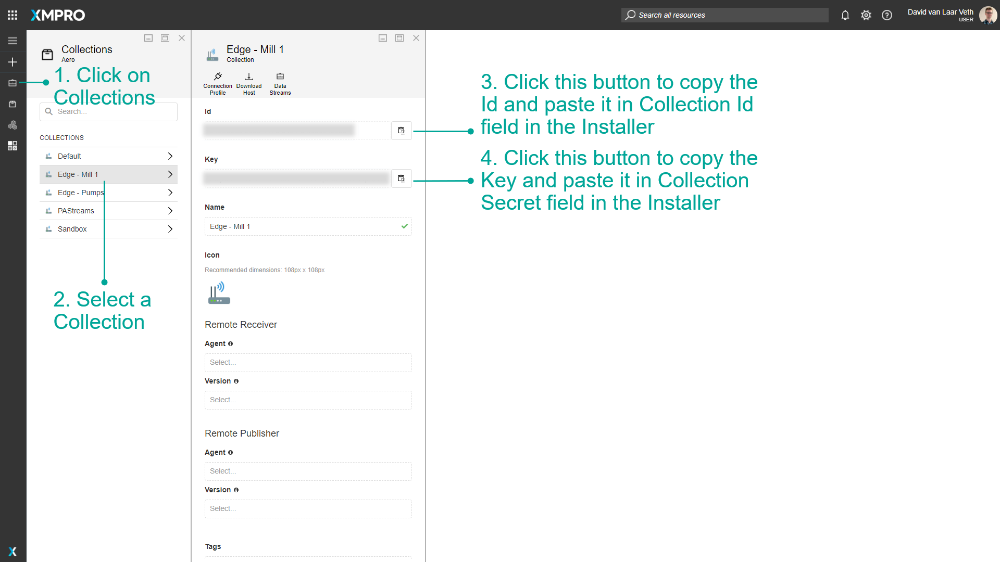

Docker
Introduction
This guide covers the XMPro Stream Host Docker image available from version 4.4.19 onwards. The latest Stream Host images have been redesigned for improved security and usability.
Note
For Stream Host images prior to v4.4.19, please refer to Docker v4.4.2 - v4.4.18 documentation.
Prerequisites
Software Requirements
A container runtime such as Docker Desktop.
Hardware Requirements
| Component | Small | Medium | Large |
|---|---|---|---|
| Stream Host | 1 CPU, 4 GB RAM | 2 CPU, 8GB RAM | 4 CPU, 16GB RAM |
Note
Actual resource requirements depend on your specific data streams. Monitor performance and adjust resources accordingly.
Configuration
Essential Environment Variables
| Key | Required | Description |
|---|---|---|
| xm__xmpro__Gateway__Id | Optional | Unique GUID identifier for this Stream Host instance. Default: A new GUID |
| xm__xmpro__Gateway__Name | Optional | Display name in Data Stream Designer. Default: "[Image-Version]-[Gateway Id]", e.g. "alpine3.21-python3.12-3bd462d4-4f1f-4cda-b6c5-d02f986beb6f" |
| xm__xmpro__Gateway__CollectionId | Required | ID of your Collection (available in Data Stream Designer) |
| xm__xmpro__Gateway__Secret | Required | Secret key of your Collection (available in Data Stream Designer) |
| xm__xmpro__Gateway__ServerUrl | Required | The server URL for where Data Stream Designer is hosted. E.g. "https://dsserver/datastreamdesigner/". Please note that this URL needs to end in a forward slash. |
| xm__xmpro__Gateway__Rank | Optional | An integer, by default is "0". See Stream Host Rank for further details. |
These settings can be found in Data Stream Designer:

Docker Repository
Below is the XMPro Docker Stream Host repository.
xmpro.azurecr.io/stream-host
Image Variants
Version Tagging
All images are tagged with their version number. For example:
xmpro.azurecr.io/stream-host:4.4.19
The latest tag points to the most recent release:
xmpro.azurecr.io/stream-host:latest
Warning
Using the latest tag caches the image locally. For guaranteed latest version, specify the exact version number or re-pull the image.
Available Variants
A Stream Host running a Data Stream must provide the capabilities to run each Agents in the Data Stream. Choose your image depending on the capabilities that are required.
| Image Name | Description |
|---|---|
xmpro.azurecr.io/stream-host:4.4.19-bookworm-slim |
Debian (Default) |
xmpro.azurecr.io/stream-host:4.4.19-bookworm-slim-python3.12 |
Debian with Python |
xmpro.azurecr.io/stream-host:4.4.19-alpine3.21 |
Alpine |
Choosing the Right Image
- Alpine-based images offer a smaller footprint, ideal for environments where size matters
- Debian-based images (Bookworm Slim) provide more comprehensive tools and libraries for general use
- Python-enabled images come with Python pre-installed for running Python-based Agents and Connectors
Python Package Installation
For Python-enabled images, you can install packages using:
Either a requirements.txt file,
pandas==2.1.4
numpy==1.26.3
Or the SH_PIP_MODULES environment variable:
SH_PIP_MODULES = pandas==2.1.4 numpy==1.26.3
Requirements.txt Location
Specify the location of your requirements.txt file using the PIP_REQUIREMENTS_PATH environment variable:
# Powershell and Bash Terminal
-v "<path_to_your_solution>:/opt/"
-e PIP_REQUIREMENTS_PATH="/opt"
# Docker compose
- PIP_REQUIREMENTS_PATH=/opt
volumes:
- "<path_to_your_solution>:/opt/"
Note
If not specified, the system will look for requirements.txt in the default path /app.
Installing System Dependencies
To install additional system packages (APK/APT), you can install it using environment variables:
ADDITIONAL_INSTALLS=git
Deployment
Docker
Replace <values> with your actual configuration settings.
PowerShell
docker run `
--name stream-host `
--restart on-failure `
-e "XM__XMPRO__GATEWAY__COLLECTIONID=<Collection ID>" `
-e "XM__XMPRO__GATEWAY__SECRET=<Collection Secret>" `
-e "XM__XMPRO__GATEWAY__SERVERURL=<Server URL>" `
xmpro.azurecr.io/stream-host:latest
With optional environment variables:
docker run `
--name stream-host `
--restart on-failure `
--pull always `
-e "XM__XMPRO__GATEWAY__COLLECTIONID=<Collection ID>" `
-e "XM__XMPRO__GATEWAY__SECRET=<Collection Secret>" `
-e "XM__XMPRO__GATEWAY__SERVERURL=<Server URL>" `
-e "XM__XMPRO__GATEWAY__ID=<Stream Host Id>" `
-e "XM__XMPRO__GATEWAY__NAME=<Stream Host Name>" `
-e "XM__XMPRO__GATEWAY__RANK=<Stream Host Rank>" `
-e "SH_PIP_MODULES=pandas scikit-learn numpy" `
-v "<path_to_your_solution>:/opt/" `
-e "PIP_REQUIREMENTS_PATH=/opt" `
-e "ADDITIONAL_INSTALLS=git" `
xmpro.azurecr.io/stream-host:latest
Note
Remove optional variables that are NOT needed.
Bash/Terminal
docker run \
--name stream-host \
--restart on-failure \
-e "XM__XMPRO__GATEWAY__COLLECTIONID=<Collection ID>" \
-e "XM__XMPRO__GATEWAY__SECRET=<Collection Secret>" \
-e "XM__XMPRO__GATEWAY__SERVERURL=<Server URL>" \
xmpro.azurecr.io/stream-host:latest
With optional environment variables
MSYS_NO_PATHCONV=1 docker run \
--name stream-host \
--restart on-failure \
--pull always \
-e "XM__XMPRO__GATEWAY__COLLECTIONID=<Collection ID>" \
-e "XM__XMPRO__GATEWAY__SECRET=<Collection Secret>" \
-e "XM__XMPRO__GATEWAY__SERVERURL=<Server URL>" \
-e "XM__XMPRO__GATEWAY__ID=<Stream Host Id>" \
-e "XM__XMPRO__GATEWAY__NAME=<Stream Host Name>" \
-e "XM__XMPRO__GATEWAY__RANK=<Stream Host Rank>" \
-e "SH_PIP_MODULES=pandas scikit-learn numpy" \
-v "<path_to_your_solution>:/opt/" \
-e "PIP_REQUIREMENTS_PATH=/opt" \
-e "ADDITIONAL_INSTALLS=git" \
xmpro.azurecr.io/stream-host:latest
Note
Remove optional variables that are NOT needed.
Docker Compose
Create a compose.yaml file in your working directory:
services:
stream-host:
image: xmpro.azurecr.io/stream-host:latest
pull_policy: always
container_name: 'stream-host'
environment:
- XM__XMPRO__GATEWAY__COLLECTIONID=<Collection ID>
- XM__XMPRO__GATEWAY__SECRET=<Collection Secret>
- XM__XMPRO__GATEWAY__SERVERURL=<Server URL>
restart: on-failure
With optional environment variables
services:
stream-host:
image: xmpro.azurecr.io/stream-host:latest
pull_policy: always
container_name: 'stream-host'
environment:
- XM__XMPRO__GATEWAY__COLLECTIONID=<Collection ID>
- XM__XMPRO__GATEWAY__SECRET=<Collection Secret>
- XM__XMPRO__GATEWAY__SERVERURL=<Server URL>
# Optional: Uncomment if needed
# - XM__XMPRO__GATEWAY__ID=<Stream Host Id>
# - XM__XMPRO__GATEWAY__NAME=<Stream Host Name>
# - XM__XMPRO__GATEWAY__RANK=<Stream Host Rank>
# - SH_PIP_MODULES=pandas scikit-learn numpy
# - PIP_REQUIREMENTS_PATH=/opt
# - ADDITIONAL_INSTALLS=git
# volumes:
# - "<path_to_your_solution>:/opt/"
restart: on-failure
Replace <values> with your actual configuration settings.
Managing Your Docker Compose Container
Start the Stream Host:
docker-compose up -d stream-host
Stop the Stream Host:
docker-compose down
Note
For more information on Docker Compose, see the Docker Compose Overview.
Next Step:
Your Stream Host installation is now complete. To install default Agents & Connectors, visit:
Last modified: May 30, 2025